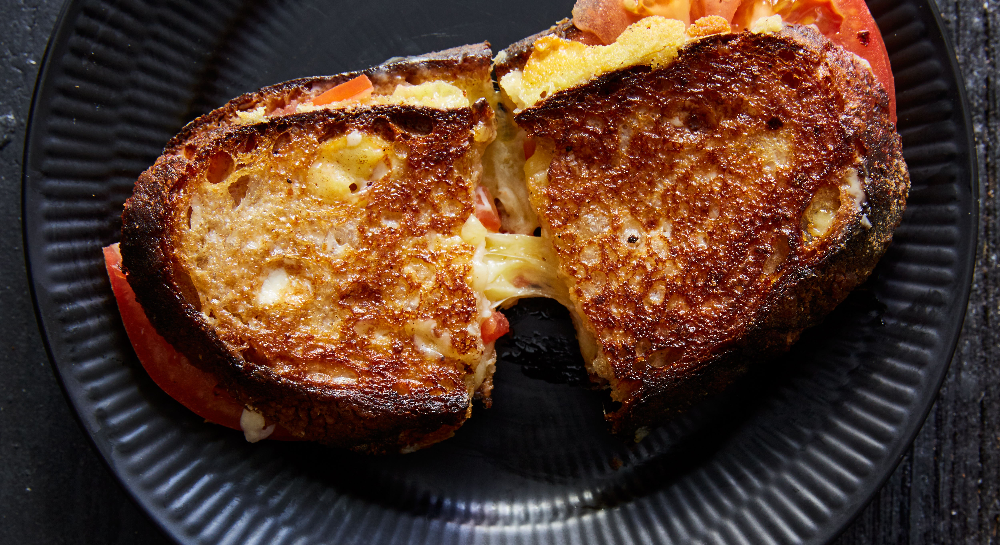

Sourdough Grilled Cheese

Ingredients
- 2 Slices of Sourdough Bread
- 2 Slices of Cheddar Cheese
- 1 Slice of Ghost Pepper Cheese
- 1/4 Sweet Onion (sliced thinly)
- 2 Tomato Slices
- 2 tsps Butter
Directions
- Heat a frying pan (preferably cast iron) over low heat while you prep your sandwiches.
- Melt 1 tsp of butter in frying pan and fry onion slices until caramelized.
- Spread 1 tsp of butter on outward facing slices of bread. Top with cheese, tomato slices, and caramelized onions.
- Cook over low heat, until bottom piece of bread is lightly browned, then carefully flip over sandwiches and cook until other piece of bread is browned. Remove from pan and let rest for just a minute so cheese isn't too runny.
- Enjoy!